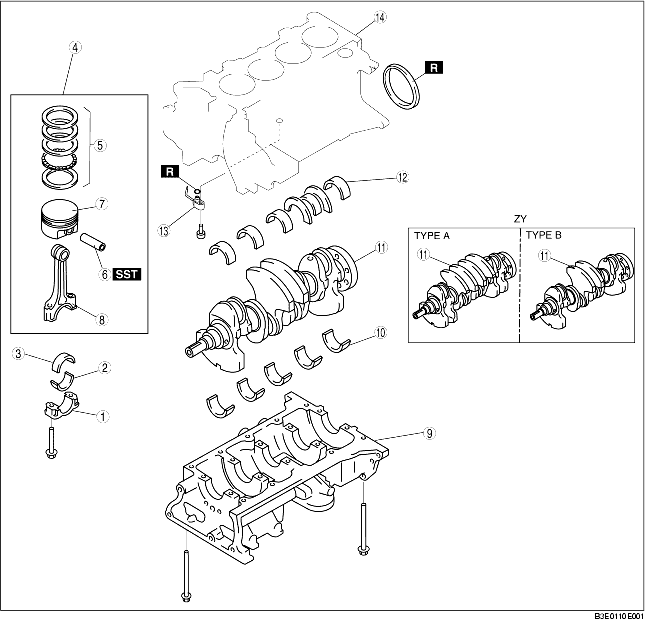
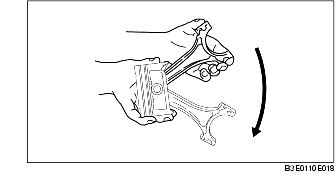
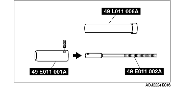
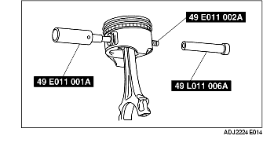
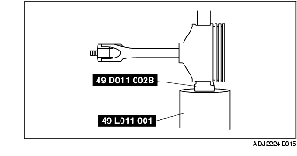
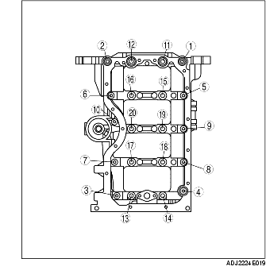

Cylinder block (II) disassembly
1. Disassemble in the order indicated in the table.

Connecting Rod Cap Disassembly Note
- • When removing the connecting rod bearings and reusing them, put a paint mark showing the front end and the journal number before the removal.
1. Inspect the connecting rod side clearance. (See CONNECTING ROD INSPECTION.)

Piston Pin Disassembly Note
1. Before extracting the piston pin, inspect the following.
-
(1) Check the oscillation torque as shown. Verify that the large end drops under its own weight with no resistance.

2. Assemble the SSTs as shown in the figure.

3. Insert the SST through the piston pin as shown in the figure and assemble.

4. Set the piston with the SSTs assembled and the connecting rod component as shown in the figure.

5. Press out the piston pin.
Lower Cylinder Block Disassembly Note
- • When removing the main bearing and reusing them, put a paint mark showing the front end and the journal number before the removal.
1. Inspect the crankshaft end play. (See CRANKSHAFT INSPECTION/REPAIR.)
2. Loosen the lower cylinder block installation bolts in the order shown in the figure.
